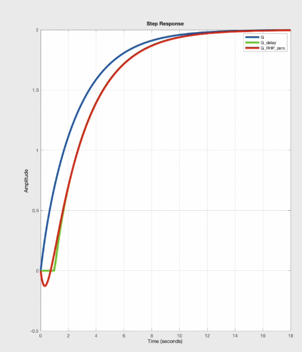
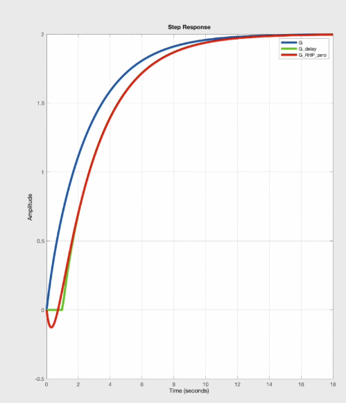
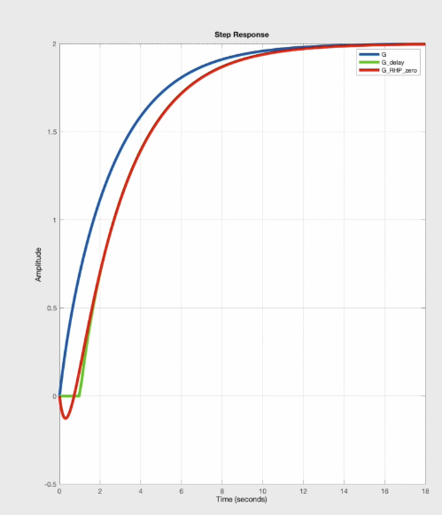

Underdamped: imgarinary poles
Cirtically damped: repeated poles (eigenvalues)
Overdamped: Real eigenvalues
For a standard second-order transfer function:
\[G(s) = \frac{\omega_n^2}{s^2 + 2\zeta \omega_n s + \omega_n^2}\]For a standard second-order system:
\[\ddot{y}(t) + 2\zeta \omega_n \dot{y}(t) + \omega_n^2 y(t) = K \omega_n^2 u(t)\]The standard second-order system in differential equation form is:
\[\ddot{y}(t) + 2\zeta \omega_n \dot{y}(t) + \omega_n^2 y(t) = K \omega_n^2 u(t)\]1. Underdamped (\(0 < \zeta < 1\)):
\[y(t) = e^{-\zeta \omega_n t} \left[ A \cos\left( \omega_n \sqrt{1 - \zeta^2} \, t \right) + B \sin\left( \omega_n \sqrt{1 - \zeta^2} \, t \right) \right]\]Critically damped (\(\zeta = 1\)):
\[y(t) = \left( A + Bt \right) e^{-\omega_n t}\]Overdamped (\(\zeta > 1\)):
Let: \(r_{1,2} = -\omega_n \left( \zeta \pm \sqrt{\zeta^2 - 1} \right)\)
Then: \(y(t) = A e^{r_1 t} + B e^{r_2 t}\)
Damping behavior is only defined for second order systems. Dominant poles are investigated for general behavior for higher-order systems.
A peak in the frequency response (magnitude plot) happens when the system has complex conjugate poles that are lightly damped.
Note: In Laplace domain, \(s=\sigma + j\omega\). When evaluating Laplace Transform at \(s=j\omega\), Laplace Transform becomes Fourier Transform. when you go from the Laplace transform \(F(s)\) to the Fourier transform \(F(j\omega)\), you’re essentially looking at the steady-state sinusoidal response of the system.
\(\mathcal{L}\{f(t)\} = F(s) = \int_0^{\infty} e^{-st} f(t) \, dt\)
Laplace Tranform is a generialized form of Fourier Transform. Specifically, Fourier Transform evaluates Laplace Transform at \(i\omega\), with no real parts, ie. Fourier Transform only evaluates purely imaginary arguments for Laplace Transform. Inpoulse response h(t) given \(u = \delta(t)\) is \(L^{-1}{G(s), where Y(s) = G(s)X(s)}\) ie the inverse Laplace Transform of the Transfer function (G(s))
If \(f(t)\) is a periodic function with period $T$, its Fourier series representation is:
\[f(t) = a_0 + \sum_{n=1}^{\infty} \left[ a_n \cos\left(\frac{2\pi n t}{T}\right) + b_n \sin\left(\frac{2\pi n t}{T}\right) \right]\]The coefficients are given by:
\[a_0 = \frac{1}{T} \int_{-T/2}^{T/2} f(t) \, dt\] \[a_n = \frac{2}{T} \int_{-T/2}^{T/2} f(t) \cos\left(\frac{2\pi n t}{T}\right) dt\] \[b_n = \frac{2}{T} \int_{-T/2}^{T/2} f(t) \sin\left(\frac{2\pi n t}{T}\right) dt\]You can also write the Fourier series using complex exponentials:
\[f(t) = \sum_{n=-\infty}^{\infty} c_n e^{i 2\pi n t / T}\]with coefficients:
\[c_n = \frac{1}{T} \int_{-T/2}^{T/2} f(t) e^{-i 2\pi n t / T} dt\]For non-periodic functions, the Fourier Transform is used. The continuous-time Fourier transform (CTFT) of a function $f(t)$ is:
\[F(\omega) = \int_{-\infty}^{\infty} f(t) e^{-i \omega t} dt\]The inverse Fourier transform is:
\[f(t) = \frac{1}{2\pi} \int_{-\infty}^{\infty} F(\omega) e^{i \omega t} d\omega\]Alternatively, in terms of frequency \(f\) (Hz) instead of angular frequency $\omega = 2\pi f$:
\[F(f) = \int_{-\infty}^{\infty} f(t) e^{-i 2\pi f t} dt\] \[f(t) = \int_{-\infty}^{\infty} F(f) e^{i 2\pi f t} df\]Intuition Fourier Transform converts a time-domain \(\bar{x}(t)\) to frequency domain \(X(f)\). This investigates how much of this specific frequency exists in the signal. Fourier Transform returns a complex number.
Motivation: For the same magnitude gain plot, phase plots can be drastically different. This is due to the fact that multiple transfer functions can produce the same magnitude gain plot, but have different phase profiles.
Note: Non-miminum phase can be primarily caused by three phenomena: 1. Time delay \(e^{-sT}\) 2. RHP zeroes 3. Non-causal/Inverse-unstable Dynamics (Non-causal systems depend on input in the future)
Inverse-unstable systems (RHP in zero -> inverse system has RHP pole (unstable inverse))

Green curve is for time delay, and red curve is for RHP zero.
Long story short, RHP zeroes take derivative on the input with the \(-S\) term, which means the derivative has opposite sign from the input, which causes the system to react in the opposite way before correcting.

Moving in the opposite way first slows down the response
Increasing the controller gain can make it unstable. (cart keeps going to the left initially because of increased error, which causes increased control effort, which in turn makes the cart keep going in the wrong way before full throttle to the right.)
NMP systems have smaller phase margins because of the additional phase lag.
NMP systems are more susceptible to the gain. Increasing the gain increases the gain crossover frequency, which decreases phase margin.
Inverted pendulum: System: x coordinate of the cart. behavior: the cart goes left first, causing the pendulum to to slightly right, before moving right again and causing the pendulum to balance.
Aircraft altitude control: System: altitude of the aircraft. behavior: to gain altitude, the aircraft needs to drop the elevator first before rising.
Having a pole in the controller that cancels out the zero in the plant is risky since the output of the controller can be unbounded even though the output of the plant (the entire system) can be stable.
Predictive or nonlinear controllers
Easiest: lower controller gain to maintain stability and increase phase margin.

\(frac{\bar{x}}{\bar{u}}\) Notes: